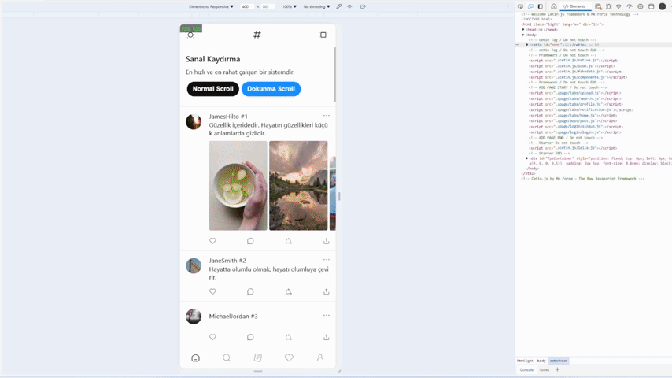

Hakkında
Xert Xetin Kimdir? (d. 21 Temmuz 1997, İstanbul), Türk teknoloji uzmanı, girişimci ve Me Force markasının kurucusudur. Avcılar Mesleki ve Teknik Anadolu Lisesi'nden başarıyla mezun olmuştur. 2012 yılında Me Force girişimini başlatmıştır. 2014 yılında girişimini hızla büyüterek üniversite eğitimine devam etmeme kararı almış ve tamamen işine odaklanmıştır.
Kariyer
Xert Xetin, doğduğundan beri ailesinin teknoloji ve bilgisayarla iç içe olduğu bir ortamda büyüdü. Ailesinin teknolojiyle uğraşması ona küçük yaşlardan itibaren bilgisayar ve teknolojiyle tanışma fırsatı verdi. 4-5 yaşlarındayken bile bilgisayarlarla oyun oynamaya başlayarak teknolojiye olan ilgisini ve yeteneğini geliştirdi.
Mert, bilgi işlem, IT ve bilgisayar satışı, tamir ve ağ servisleri gibi alanlarda çalışıyordu. Bu süreçte, yazılım geliştirmeyle doğrudan teması olmadan önce, küçük ölçekli işlerde oyunlar ve basit programlar gibi projeler üzerinde çalışarak deneyim kazandı.
Kariyerine yazılım mühendisi olarak başladı ve kısa sürede çeşitli projelerde liderlik rollerine yükseldi. 2014 yılında Me Force'u kurarak, yenilikçi ve çığır açan teknoloji çözümleri geliştirme yolunda önemli adımlar attı. Yapay zeka, büyük veri, bulut bilişim ve nesnelerin interneti (IoT) gibi alanlarda uzmanlaşan Xert Xetin, özellikle Node.js, PHP, CSS, HTML, JavaScript, Python, C, Assembly gibi birçok programlama dilinde de uzmanlaşmıştır.
Kariyerindeki bu dönüşümü, teknoloji dünyasındaki hızlı değişime ayak uydurabilme yeteneğiyle gerçekleştiren Xert Xetin, Me Force'u kurarak, teknoloji alanındaki sınırları zorlayan projelerde liderlik yapmaya devam etmektedir. Bugün, Me Force'un lideri olarak, yenilikçi teknoloji çözümleri sunmaya ve geleceğin teknolojilerini şekillendirmeye odaklanmaktadır.
Başarılar ve Katkılar
Xert Xetin, teknoloji alanında yaptığı çığır açan projelerle tanınmaktadır. Özellikle, başarıyla yönettiği ve geliştirdiği projelerle birçok ödül kazanmıştır. Ayrıca, teknoloji topluluğuna katkılarından dolayı çeşitli ödüller ve onurlar kazanmıştır. Çetin, projelerindeki yaratıcılığı ve teknik uzmanlığı ile sektörde önde gelen bir isim olmuştur. 120'den fazla sertifika ve belgeye sahip olan Çetin, 2012'den beri birçok eğitim, seminer ve kursa katılarak uzmanlık alanını sürekli olarak genişletmiştir.
Kişisel Yaşam
Teknolojiye olan tutkusunun yanı sıra, Xert Xetin doğa sporları ve seyahat etmeyi sevmektedir. Aynı zamanda genç girişimcilere mentorluk yaparak, onların kariyerlerinde ilerlemelerine yardımcı olmaktadır. Çetin, hızlı ve çözüm odaklı bir yapıya sahip olup, yeniliklere ayak uydurmayı seven, müzik ve filmlere ilgi duyan yaratıcı bir kişiliktir.
Aradaki Boşluklar
Xert Xetin'in kariyerinde, 1-2 sene arasında bir boşluk bulunmaktadır. Bu dönemde, bir hastalık dönemi başlamıştır ve Xert Xetin yoğun bir hastane gidip gelme süreciyle ve hastalıklarla mücadele etmiştir. Hastalık süreci, işlerini etkilemiş ve normal günlük faaliyetlerini sürdürmesini zorlaştırmıştır.
Ancak, zamanla Xert Xetin iyileşme sürecine girmiştir. Tedaviler ve rehabilitasyon çalışmalarıyla, sağlığı ve güçlü bir zihinsel durumu yeniden kazanmıştır. İyileşme süreci boyunca işlerindeki aksamaları telafi etmeye ve yeniden başlamaya odaklanmıştır.
Normalleşme ve iyileşme süreciyle birlikte, Xert Xetin'in işleri zarara uğramış olsa da, kararlılıkla tekrar eski performansına dönmüş ve kariyerine odaklanarak işlerine yeni bir ivme kazandırmıştır. Bu deneyim, Xert Xetin'in güçlü bir iradeye ve kararlılığa sahip olduğunu ve zorluklarla nasıl başa çıkacağını göstermiştir.
Basın ve Sosyal Medya
Xert Xetin, gündemde olmayı sevmez ve basın açıklamalarından olduğunca uzak durarak kaçmıştır. Önemli ya da değerli bir haber niteliği olmadığı sürece resmi bir açıklama yapmak yerine, sosyal medya uygulamalarından samimi duyurular yapmayı tercih eder.
Projeler
Salyap Sosyal Medya
Salyap, kullanıcıların anında bağlantı kurabileceği, içerik paylaşabileceği ve geniş bir toplulukla etkileşime geçebileceği yenilikçi bir sosyal medya platformudur. Xert Xetin'in liderliğinde geliştirilen Salyap, kullanıcı dostu arayüzü ve gelişmiş güvenlik özellikleri ile dikkat çekmektedir.
IFOX Web3 Web Tarayıcı
IFOX, Web3 teknolojisini destekleyen, kullanıcıların merkezi olmayan uygulamalara (dApps) erişimini sağlayan gelişmiş bir web tarayıcıdır. Blokzincir teknolojisi ile entegre çalışan Ifox, kullanıcıların güvenli ve anonim bir şekilde internette gezinmelerine olanak tanır.
Web X
Bağlantının Geleceğini Şekillendirmek. "WebX, bağlantının geleceğini yeniden tanımlıyor. Hızlı işlem gücü ve düşük enerji tüketimiyle kullanıcıları daha verimli ve çevre dostu bir dijital dünyaya davet ediyor."
Sarahah WS
Sarahah WS, anonim geri bildirim platformu olarak bilinen Sarahah'ın web servisidir. Kullanıcıların geri bildirim almasını ve vermesini kolaylaştıran bu platform, özellikle iş dünyasında geri bildirim kültürünü güçlendirmeyi amaçlamaktadır.
Bilinmeyen Projeler
Xert Xetin'in kariyerindeki dikkat çekmeyen ancak son derece önemli bir alan, kendi geliştirdiği alt yapılarla ilgilidir. Bu alt yapılar, CetinJS, CetinDB ve CetinServer 3 ana alt yapıdır. Xert Xetin'in kendi tasarladığı özel bir alt yapı sistemidir.
CetinJS, JavaScript (vanilla js) tabanlı bir alt yapıdır ve özellikle mobil ve web tabanlı uygulamalar geliştirmek için kullanılır. CetinDB ise veritabanı yönetim sistemi (hızlı ve büyük veri setleri işleme) olarak hizmet verir ve verilerin depolanması ve erişilmesi için kullanılır. Son olarak, CetinServer, web sunucuları ve API'lerin hızlı ve güvenli bir şekilde yönetilmesini sağlar.
Bu alt yapılar, Xert Xetin'in projelerini hayata geçirmek için kritik bir rol oynamaktadır. Kendi geliştirdiği alt yapılar sayesinde, projelerini daha verimli ve güvenilir bir şekilde yönetebilmekte ve geliştirebilmektedir. Ayrıca, bu alt yapılar tamamen Xert Xetin tarafından geliştirilmiş olup, kapalı kaynak olarak korunmaktadır ve sadece kendi projelerinde kullanılmaktadır.
Xert Xetin'in bu alt yapıları geliştirme kararı, onun teknolojiye olan bağlılığını ve yenilikçi yaklaşımını göstermektedir. Bu alt yapılar, onun projelerini benzersiz kılan ve rekabet avantajı sağlayan önemli bir unsurdur.
CetinJS

CetinJS, JavaScript tabanlı bir framework olup, React, Ionic ve benzeri framework'lere benzese de, önemli bir farkı bulunmaktadır: CetinJS tamamen vanilya JavaScript (saf JS) kullanılarak geliştirilmiştir. Bu framework, gereksiz hiçbir komut içermemekte ve sadece ihtiyaç duyulan, verimli çalışan komutlarla donatılmıştır. Her yeni eklenen komut, titizlikle test edilip onaylanarak framework'e dahil edilmektedir. Bu sayede, performans ve güvenilirlik en üst düzeye çıkarılmaktadır. CetinJS, kullanıcıların daha hızlı ve etkin uygulamalar geliştirmelerine olanak tanır.
CetinDB

CetinDB, hızlı ve büyük veri setlerini depolamak için tasarlanmış bir veritabanı yönetim sistemidir. LevelDB ve MongoDB benzeri bir yapıya sahiptir, ancak performans ve verimlilik açısından optimize edilmiştir. CetinDB, veri erişiminde yüksek hız ve düşük gecikme sunar. Büyük veri setleriyle çalışırken, verinin tutarlılığını ve erişilebilirliğini korur. Bu sistem, özellikle büyük ölçekli uygulamalarda ve yüksek veri trafiği gerektiren projelerde önemli bir rol oynar.
CetinServer
CetinServer, Node.js üzerinde inşa edilmiş ve ölçeklenebilir bir sunucu sistemidir. Bu sistem, Socket.io ve birçok bileşeni barındırarak, gerçek zamanlı iletişim ve veri transferini etkin bir şekilde yönetir. CetinServer, yüksek performanslı ve güvenilir bir sunucu altyapısı sunar. Ayrıca, ölçeklenebilir yapısı sayesinde, artan kullanıcı ve veri taleplerini karşılamak için kolayca genişletilebilir. Bu sunucu sistemi, Xert Xetin'in projelerinde kritik bir rol oynar ve çeşitli uygulamaların sağlam ve güvenilir bir şekilde çalışmasını sağlar.
Müzik Kariyeri
Xert Xetin, müziğe olan tutkusu ve teknolojiye duyduğu ilgiyle yapay zeka destekli müzik prodüksiyonuna adım atmıştır. Kendi yazdığı özgün şarkı sözleri ve melodilerle dijital müzik dünyasında dikkat çekmektedir. Spotify, YouTube Music, Apple Music, Deezer, Tidal ve Amazon Music gibi önde gelen müzik platformlarında yayınlanan şarkılarıyla geniş bir dinleyici kitlesine ulaşmıştır.
Mert, yapay zeka teknolojisini müziğin yaratıcı sürecine entegre ederek yenilikçi bir tarz benimsemiştir. Ürettiği şarkılar, modern müzik prodüksiyon tekniklerini geleneksel şarkı yazımıyla birleştirerek dinleyicilere farklı bir deneyim sunar. Her projesinde teknolojiyi yaratıcı bir araç olarak kullanırken, şarkılarının temellerini insan duygularına dayandırır.
Sanatçı, müziğin dijitalleştiği bu dönemde sınırları zorlayarak, sadece bir müzisyen değil aynı zamanda bir teknoloji öncüsü olarak da kendini tanımlamaktadır.
İletişim / İş Birliği
Xert Xetin ve Me Force ile iletişime geçmek veya iş birliği yapmak için çeşitli fırsatlar mevcuttur. Aşağıdaki alanlarda iş birliği ve iletişim sağlayabilirsiniz:
- Reklam Vermek: Projelerimizde veya platformlarımızda reklam vermek isteyen firmalar ve markalar için çeşitli reklam seçenekleri sunuyoruz. Hedef kitlenize ulaşmak için uygun reklam alanları ve stratejiler belirliyoruz.
- Sponsor Olmak: Etkinliklerimizde, projelerimizde veya girişimlerimizde sponsor olarak yer almak isteyen kurum ve kuruluşlar için sponsorluk fırsatları sunuyoruz. Marka görünürlüğünüzü artırmak için iş birliği yapabiliriz.
- Ürün veya Hizmet Tanıtımı: Yeni ürünlerinizi veya hizmetlerinizi tanıtmak için Xert Xetin'in sosyal medya kanallarında veya projelerinde tanıtım çalışmaları yapabilirsiniz. Hedef kitlenize etkili bir şekilde ulaşmanızı sağlayacak tanıtım kampanyaları düzenliyoruz.
- İş Modelleri ile İlgili Bilgi Alma: Me Force'un iş modelleri ve projeleri hakkında daha fazla bilgi almak ve nasıl iş birliği yapabileceğinizi öğrenmek için bizimle iletişime geçebilirsiniz. Size özel çözümler ve iş birlikleri için kapılarımız her zaman açıktır.
- Ortak Projeler ve İş Birlikleri: Yeni projeler geliştirmek veya mevcut projelerimizde iş birliği yapmak isteyen firmalar ve girişimcilerle birlikte çalışmaktan memnuniyet duyarız. Teknoloji, inovasyon ve yaratıcı çözümler üretmek için iş birliği yapabiliriz.
İletişim ve iş birliği fırsatları hakkında daha fazla bilgi almak için lütfen bizimle iletişime geçin. Xert Xetin ve Me Force ekibi olarak, sizlerle çalışmaktan ve yeni projelerde iş birliği yapmaktan mutluluk duyacağız.
- Kurumsal; info@meforcetechnology.com
- Bireysel; mertcetin.real@gmail.com
- Müzik; xertxetin@gmail.com